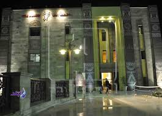

مهام ادارة الاستحقاقات
.اعداد وتحرير كشوف المرتبات والاجور التى يتم صرفها شهريا للمعينين والمنتدبين والمؤقتين
.تحرير الاستمارات الخاصة برصيد الاجازات للمنتهى خدمتهم سواء معاش او وفاة
.تحويل المرتبات للبنوك ومتابعة حركتها منذ بداية تحويلها وحتى النهاية
.الرد على المناقضات التى ترد من الاجهزة الرقابية (الجهاز المركزى للمحاسبات ) والاجهزة الاخرى المختصة فى هذا الشأن
.تنفيذ الكتاب الدورى وفتاوى مجلس الدولة والقرارات التى ترد من الجهات المختصة التى تحكم عمل واختصاصات الاستحقاقات

رابط تحميل برنامج الاستحقاقات
رمز الصداقة

يقع رمز الصداقة المصرية السوفيتية بالقرب من جسم السد العالى فى محافظة أسوان ويعد شاهدًا على قوة العلاقات المصرية الروسية.
خزان اسوان

- تم استغلال المياه المندفعة منه لعمل محطتين لتوليد الكهرباء ، هما محطة توليد أسوان الأولى ومحطة توليد أسوان الثانية. - تم إنشاء طريق عليه يربط بين ضفتي النيل الشرقية والغربية.
المركز الثقافى الافريقى
ويعد المركز الثقافى الافريقى بأسوان فى مقدمة المقاصد التى تحرص الوفود والرحلات على زيارتها والتقاط الصور التذكارية بين جنباته كما تقام فى المركز حفلات التخرج لطلاب كما تحرص الوفود الرسمية أثناء زيارتها لأسوان على مشاهدة مقتنيات المتحف.